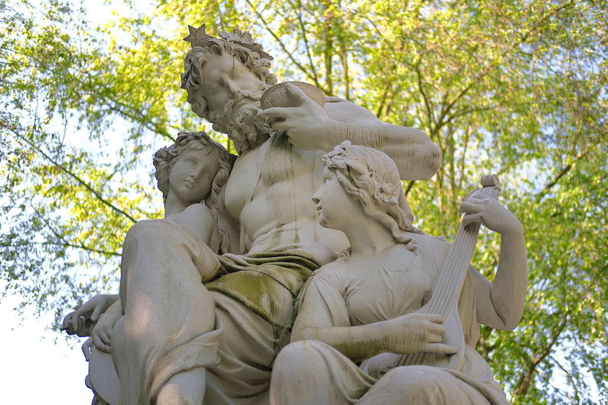

Ein Tag wie ein ganzes Leben
Die Figurengruppe „Vier Tageszeiten“ (1868/1871) von Johannes Schilling

Johannes Schillings „Vier Tageszeiten“, Figurengruppen, die „Abend“ und „Nacht“, „Morgen“ und „Mittag“ in allegorischen Bildern verkörpern, haben eine bewegte Geschichte.
Johannes Schilling wurde 1828 in Mittweida geboren. Ein Jahr später zog die Familie nach Dresden, wo Johannes Schilling aufwuchs und an der Kunstakademie und als Meisterschüler beim berühmten Ernst Rietschel, studierte. Unterricht in Berlin schloss sich an, von 1854 bis 1856 bereiste er Italien und Rom – Einflüsse, die seinem Werk deutlich anzusehen sind. 1857 eröffnete er ein eigenes Atelier und nahm erste Aufträge, unter anderem für Gottfried Semper, an. Seinen Durchbruch erreichte Johannes Schilling jedoch mit den „Vier Tageszeiten“.
Schilling beteiligte sich an einem 1860 ausgeschriebenen Wettbewerb für die Neugestaltung des nördlichen Aufgangs der Brühlschen Terrasse in Dresden. Er erhielt den Auftrag, weil König Johann empfahl, nicht den Siegerpreis, sondern den Zweitplatzierten, „Die Vier Tageszeiten“, ausführen zu lassen. Nach einer Überarbeitung wurden die Entwürfe 1862 genehmigt und von dem Bildhauer Franz Schwarz in Sandstein ausgeführt. 1868 wurden „Abend“ und „Nacht“, 1871 „Morgen“ und „Mittag“ aufgestellt. Da die Sandsteinfiguren jedoch der Witterung nicht standhielten, eine Vergoldung keine Abhilfe schaffte – „gegenwärtig machen die Kunstwerke nicht den besten Eindruck“, klagten die „Dresdner Nachrichten“ 1902 – wurden sie 1908 durch Bronzeabgüsse ersetzt.
Die originalen Sandsteinfiguren erhielt die Stadt Chemnitz als Geschenk, musste aber den Transport bezahlen und einen dauerhaften Standort zusichern. Zunächst wurden sie an der Treppe vor der Petrikirche zwischen Theaterplatz und Schillerpark, mussten jedoch 1928 dem Neubau des Hotels „Chemnitzer Hof“ weichen und wurden deshalb 1936 am Aufgang zur Brunnenanlage im Chemnitzer Schloßteichpark aufgestellt, wo sie nach mehrfacher Restaurierung noch immer ein Blickfang sind.
Johannes Schilling war ein bedeutender Vertreter des besonders beim sich etablierenden Bürgertum beliebten Historismus in der Kunst. Im Rückgriff auf vergangene Kunststile – von der Antike bis zum Barock – konnten das reich gewordene Bürgertum, aber auch andere Auftraggeber, die es sich leisten konnten (Regierungen, Königshäuser) ihre Repräsentationsbedürfnisse erfüllen.
Diesem Zweck dienten auch die „Vier Tageszeiten“, einem schon in der Romantik beliebten Motiv, das auch Caspar David Friedrich und Moritz von Schwind aufgegriffen hatten.
Die vier Figurengruppen – von links oben nach rechts unten: Der „Morgen“ mit Erwachen und Morgentau: Der Tagesbeginn wird von einer jungen Frauengestalt symbolisiert, der zwei Mädchen zur Seite stehen, deren eines mit einem Taukrug die Blumen gießt. Der „Mittag“ mit Arbeit und Streben: Ein Mann mit einer Strahlenkrone hält mit der rechten Hand den Ruhmeskranz empor. Ein Junge greift danach, während ein zweiter Junge mit dem Spaten arbeitet. Der „Abend“ mit Musik und Tanz: Ein kräftiger Mann überlässt sich nach vollbrachtem Tagwerk dem Genuss, lauscht dem Saitenspiel eines Mädchens zu seinen Füßen, und schaut einem zweiten Mädchen zu, das mit einem Tamburin in der Hand zu tanzen beginnt. Die „Nacht“ mit Schlaf und Traum: Eine Frau, die Mondsichel über der Stirn, legt schützend ihr Gewand über einen schlafenden Jungen, während der geflügelte Morpheus ihr Träume zuflüstert.
Diese „Vier Tageszeiten“ stehen für ein ganzes Leben – entsprechend den damals üblichen Geschlechterrollen und dem bürgerlichen Ideal vom fleißig „schaffenden“ Menschen, der meist ein Mann war und dann auch Anspruch auf Muße mit der Frau hatte. Eine Gedankenwelt, die sich schon bald als nicht mehr zeitgemäß erweisen würde.
Johannes Schilling aber eröffneten die „Vier Jahreszeiten“ die Möglichkeit, zahlreiche Großaufträge auszuführen: unter anderem das Ernst-Rietschel-Denkmal, die Panther-Quadriga, die „Saxonia“ und ein Reiterstandbild für König Johann von Sachsen in Dresden, ein Reformationsdenkmal in Leipzig, das umstrittene Niederwalddenkmal in Rüdesheim, Denkmale für Kaiser Wilhelm I. in Wiesbaden und Hamburg. Diese Denkmale prägen die Orte bis heute, während der Ruhm Johannes Schillings bald verblasste. So schrieb „Kunstchronik und Kunstmarkt: Wochenschrift für Kenner und Sammler“ 1907: „Der Dresdener Bildhauer Johannes Schilling hat am 1.
Oktober 1906 sein Amt als Professor an der Königlichen Kunstakademie und als Mitglied des akademischen Senates niedergelegt und ist, 78 Jahre alt, in den Ruhestand getreten. Beim Scheiden aus den Ämtern, die er 38 Jahre innegehabt hat, verlieh ihm der König von Sachsen den Titel Exzellenz. Eine Sorge des greisen Künstlers ist noch das Schicksal seines Museums, das heißt der Sammlung der Originalgipsmodelle seiner plastischen Werke. Im Ganzen sind es ungefähr 204 Werke, das ist etwa der vierte Teil von allem, was Johannes Schilling im Laufe von 60 Jahren geschaffen hat. Das Museum hat seinem Besitzer nicht viel Freude gemacht.
Es liegt weitab vom Mittelpunkte der Stadt in der Vorstadt Striesen und teilt das Schicksal der meisten Einermuseen, dass es wenig besucht wird. Jüngst allerdings, als es einmal einige Tage lang ausnahmsweise bei freiem Eintritt offenstand, war es stark besucht: viele Dresdener sahen das Museum bei dieser Gelegenheit zum ersten Mal. Es lässt sich aber nicht erwarten, dass diese Anziehungskraft anhalten werde. Dazu enthält das Schilling-Museum denn doch zu viele minderwertige Werke, teils aus der Zeit, da Schilling mit vielen Gehilfen und Schülern Bildwerke auf Bestellung fabrizierte, teils aus seinen späteren Jahren.
Noch dazu sind die Bildwerke so gedrängt aufgestellt, dass sie einander in der Wirkung stören. Sollte die Stadt Dresden sich entschließen, das ihr zum Kauf angebotene Museum wirklich zu kaufen, so müsste man in Aussicht nehmen, den Bestand zu sichten, nur eine beschränkte Anzahl der wirklich wertvollen Werke Schillings im Museum zu lassen und die Lücken durch Werke anderer zeitgenössischer Bildhauer Dresdens auszufüllen. Damit erwiese man Schillings Künstlerruhm selbst einen Gefallen und dadurch würde das Museum überhaupt erst lebensfähig, das heißt zugkräftig für die Besucher.“ Dazu kam es jedoch nicht.
Johannes Schilling starb am 21. März 1910 in Klotzsche bei Dresden. In seiner Geburtsstadt Mittweida erinnert ein Museum an den Bildhauer.